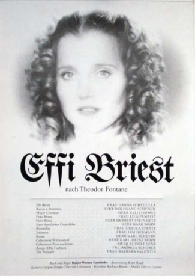

#4496 Effi Briest
Alternativ: Fontane Effi Briest
 
 IMDB-Wertung: 7.1 / 10
IMDB-Wertung: 7.1 / 10  Metascore: 0
Metascore: 0 
Die siebzehnjährige Effi Briest wird mit dem wesentlich älteren Regierungsinspektor Gert von Innstetten verheiratet. Die Ehe der beiden ist trist, da sich von Innstetten nur für seine politische Karriere interessiert. Etwas Glück genießt Effi nur in einer kurzen Affäre mit Major Crampas, die jedoch durch die Versetzung ihres Mannes nach Berlin beendet wird. Anschließend geht über Jahre alles wie zuvor weiter, bis von Instetten eines Tages die alten Liebesbriefe Crampas’ entdeckt. Er läßt sich von Effi scheiden, die zurück auf das Gut ihrer Eltern zieht und dort bald vereinsamt stirbt.
Jahr: 1974
Dauer: 140 Minuten
FSK: 12
Land: West-Deutschland Studio: Kinowelt Home EntertainmentTonspuren:
Untertitel:
Auflösung: 1080p (1488x1080) Größe: 8949 MB
Genre: Drama, Geschichte
Regisseur: Rainer Werner Fassbinder
Drehbuch: Jarmo Puskala
Soundtrack:
Darsteller:
 Hanna Schygulla als Effi Briest
Hanna Schygulla als Effi Briest Ulli Lommel als Major Crampas
Ulli Lommel als Major Crampas Irm Hermann als Johanna
Irm Hermann als Johanna Karlheinz Böhm als Wüllersdorf
Karlheinz Böhm als Wüllersdorf- Barbara Lass als Polnische Köchin
- Wolfgang Schenck als Instetten
- Lilo Pempeit als Frau Briest
- Herbert Steinmetz als Herr Briest
- Ursula Strätz als Roswitha
 Karl Scheydt als Kruse
Karl Scheydt als Kruse- Rudolf Lenz als Geheimrat Rummschüttel
- Andrea Schober als Annie von Instetten
 Eva Mattes als Hulda
Eva Mattes als Hulda- Theo Tecklenburg als Pastor Niemeyer
- An Dorthe Braker als Frau Pasche
- Peter Gauhe als Vetter Dagobert
Datei: X:\1974\Effi Briest (1974, FSK12, 1488x1080).mkv seit 28.09.2016
Festplatte: HD 1971-1979
 Es gibt insgesamt 33 Filme in der Gruppe '1974'
Es gibt insgesamt 33 Filme in der Gruppe '1974'